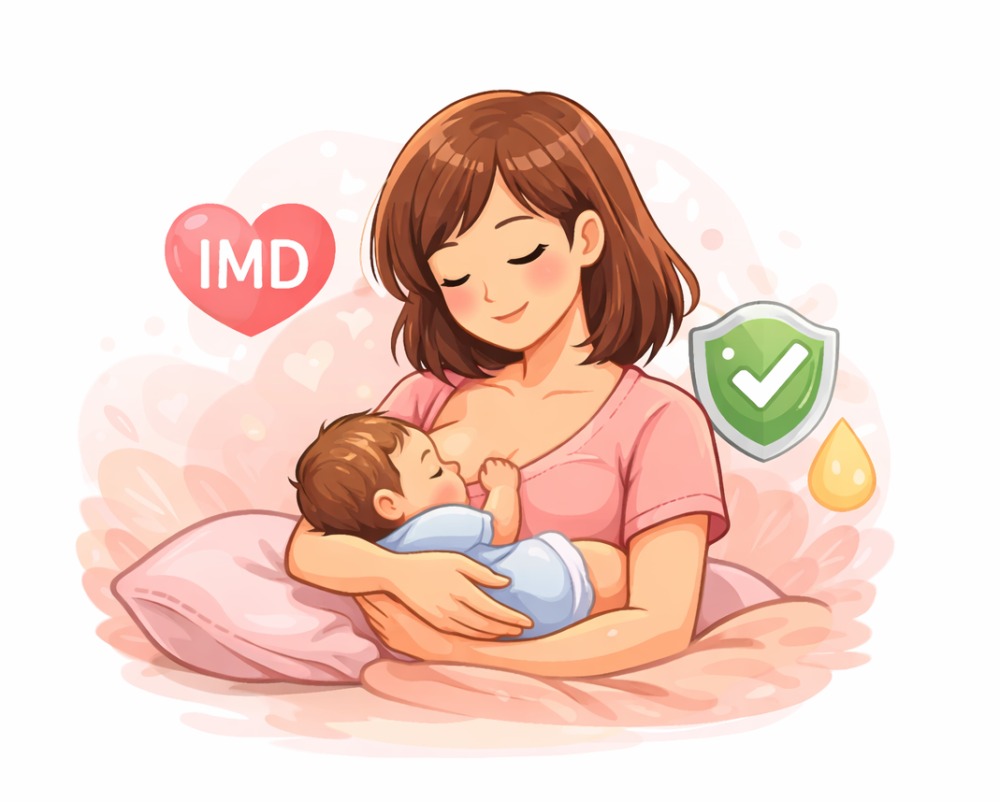

Pilih materi edukasi untuk mempelajari lebih lanjut mengenai ASI Eksklusif bagi ibu hamil dan ibu menyusui.
Pelajari definisi dan manfaat ASI Eksklusif bagi bayi dan ibu.
SelengkapnyaKetahui nutrisi penting dan menu sehat bagi ibu hamil dan menyusui.
Selengkapnya
Pelajari pentingnya Inisiasi Menyusu Dini (IMD) dan posisi menyusui yang nyaman serta teknik pelekatan yang benar.
SelengkapnyaDapatkan berbagai tips praktis untuk keberhasilan ASI Eksklusif.
Solusi praktis untuk mengatasi dan mencegah puting lecet saat menyusui.
Selengkapnya